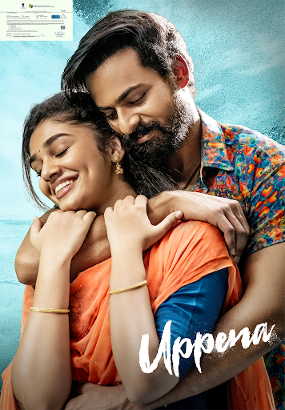
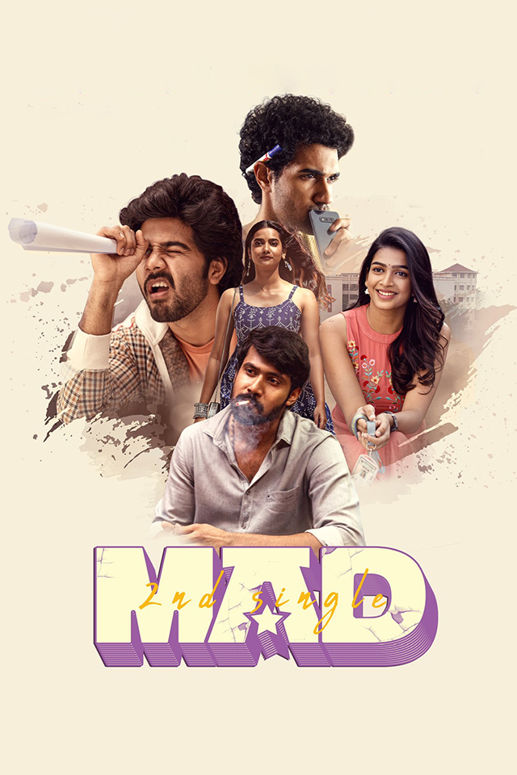

Hi Nanna (2023) is a Telugu-language romantic drama directed by Shouryuv in his directorial debut.
The film stars Nani as Viraj, a single father raising his 6-year-old daughter, Mahi (Kiara Khanna).
Viraj avoids discussing Mahi's mother, crafting bedtime stories that exclude maternal figures to
shield her from painful truths. Their lives take a turn when Yashna (Mrunal Thakur) enters their world,
prompting Viraj to confront his past and share the story of Mahi's mother. The narrative delves into
themes of love, loss, and healing, underscored by Hesham Abdul Wahab's emotive musical score.
Dear Comrade (2019)
Dear Comrade (2019) is a Telugu-language romantic action drama directed by Bharat Kamma.
The film stars Vijay Deverakonda as Chaitanya "Bobby" Makineni, a passionate student union
leader with anger management issues, and Rashmika Mandanna as Aparna "Lilly" Devi, a state-level
cricketer. The narrative explores the tumultuous relationship between Bobby and Lilly, highlighting
how Bobby's impulsive nature and Lilly's traumatic experiences in her cricketing career strain
their bond. As they navigate personal and professional challenges, the story delves into themes
of love, personal growth, and the importance of standing up against injustice.
Uppena (2021)

Uppena (2021) is a Telugu-language romantic drama directed by Buchi Babu Sana, marking the debut of
actors Panja Vaisshnav Tej and Krithi Shetty. Set in the coastal village of Uppada near Kakinada,
the film follows the love story between Aasi, a fisherman’s son, and Bebamma, the daughter of a
powerful zamindar, Raayanam (played by Vijay Sethupathi). Their relationship faces intense opposition
due to caste differences and societal norms. As the couple elopes to escape Raayanam’s wrath,
the narrative delves into themes of honor, masculinity, and societal pressures. The film is noted for
its emotional depth, compelling performances, and a poignant climax that challenges traditional notions of manhood.
Mad (2023)

Mad (2023) is a Telugu-language coming-of-age comedy-drama directed by Kalyan Shankar in his directorial debut.
The film stars Narne Nithiin, Sangeeth Shobhan, and Ram Nithin as three college freshmen—Manoj, Ashok,
and Damodhar—navigating the vibrant and chaotic world of engineering campus life. Set in an engineering college,
the story revolves around the antics of the students there, primarily the boys, who get a kick out of torturing
the hostel warden.
The Family Star (2024)
The Family Star (2024) is a Telugu-language romantic action drama directed by Parasuram, featuring
Vijay Deverakonda as Govardhan and Mrunal Thakur as Indu. Govardhan, an architect from a middle-class background,
shoulders the responsibility of supporting his extended family. His life takes a turn when Indu, a university student,
becomes a tenant in his home. Their budding relationship faces turmoil upon Govardhan discovering that Indu's closeness
was part of her academic thesis on his family, leading to conflict and emotional upheaval. The narrative explores
themes of trust, ego, and familial bonds as Govardhan navigates personal and professional challenges to reconcile with Indu.
Despite its exploration of middle-class struggles and family dynamics, the film received criticism for its writing
and performances, resulting in a lackluster box office performance.